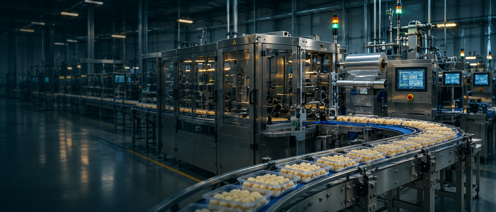
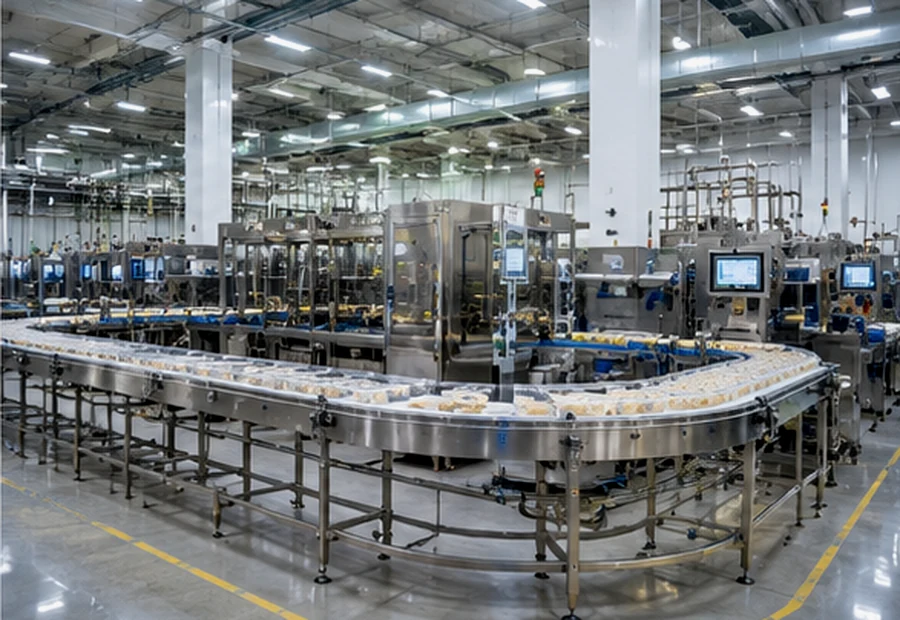
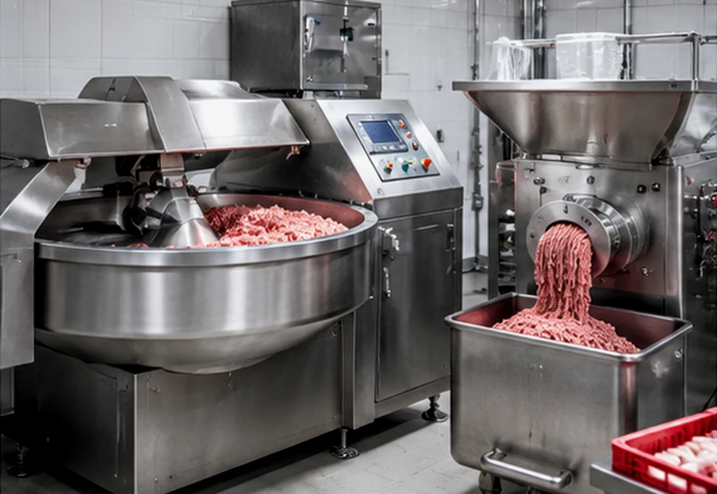

БИЗНЕС И ЭКОНОМИКА
Эржена Бадураева
Предпринимательский опыт, финансовая стратегия и работа с бизнес-сообществами. Помогает сформулировать цель модернизации и оценить её экономический смысл.
Подбираем пищевое оборудование в Китае под ваш продукт, сырьё, производительность и возможности масштабирования.
Экономика российского производства и работа с китайскими поставщиками — два взгляда, которые нужны до решения о закупке.
Предпринимательский опыт, финансовая стратегия и работа с бизнес-сообществами. Помогает сформулировать цель модернизации и оценить её экономический смысл.

Китайский язык, взаимодействие с производителями, закупки, логистика и переговоры. Уточняет параметры решений и условия сотрудничества на стороне поставщиков.
Перед сравнением предложений важны фактические параметры: сырьё, конечное изделие, стабильность цикла, документация и возможность обслуживания.

Просим показать цикл на сравнимом продукте — от подачи сырья до результата.
Иллюстративное изображение, не кадр визита DARKHANTECH
Уточняем условия, при которых достигаются скорость, точность и выход годной продукции.
Иллюстративное изображение
Сопоставляем требования к персоналу, расходникам, обслуживанию и запуску.
Иллюстративное изображениеРеальные видео испытаний и переговоров будут размещены здесь после получения материалов компании и разрешений на публикацию. Контакты с заводом не равны подтверждённой поставке.
Два первых разбора подготовлены по задачам, упомянутым в маркетинговом аудите; третий — учебный сценарий. Без названий клиентов, непроверенных результатов и заявлений о завершённой поставке.
Исходная задача из аудита: изделия 8–12 г, тонкое тесто и структура начинки. Это черновой разбор, не описание завершённого проекта.
Категории — отправная точка. Конфигурацию и параметры оборудования определяет ваш продукт.

Формование пельменей, бууз и изделий из теста

Подготовка сырья, измельчение, фарш

Масштабирование выпуска готовых блюд

Замес, формование и выпечка
Дозирование, упаковка, маркировка
Стыковка машин и технологических участков
Рабочий чек-лист для первого запроса. Он помогает сопоставить предложения, даже когда модели из разных каталогов.
Сырьё, влажность, тип нарезки и чистота технологической линии определяют конфигурацию.
Сравнивайте конфигурации по характеру производства, а не только по цене и паспортной скорости. Переключите сценарий, чтобы увидеть критерии решения.
| Критерий | ВАРИАНТ AОтдельная машина | ВАРИАНТ BИнтегрированная линия |
|---|---|---|
| Сценарий работы | Отдельное формование | Связанные операции |
| Ключевой плюс | Проще перенастройка | Меньше ручных переходов |
| Ограничение | Зависимость от подачи | Нужна синхронизация |
| Проверка на заводе | Вес и шов в серии | Непрерывность потока |
Протокол испытаний, комплектацию и ограничения выбранной конфигурации.
Таблица показывает принцип сравнения технологических архитектур. Это не спецификации реальных моделей, не рейтинг производителей и не подтверждение преимуществ DARKHANTECH. Конкретные значения требуют документации и испытаний.
Сравните выпуск годной продукции, возможные дополнительные продажи, штат, сервис, простои и затраты на запуск. Это сценарий, а не прогноз или гарантия окупаемости.
Модель не учитывает налоги, кредитование, сезонность, реальную загрузку, закупку сырья, амортизацию и другие факторы. Учёт сокращения простоев должен быть выключен (значения 0), если его эффект уже отражён в выпуске продукции: не допускайте двойного счёта. Рост ФОТ и дополнительная реализация зависят от фактических условий.
Показываем состав полной стоимости проекта. Список и распределение ответственности уточняются до согласования договора.
Цена завода, опции и требуемая комплектация.
Испытания, документы и подтверждение параметров.
Логистика, таможня, страховка и условия поставки.
Монтаж, обучение, запчасти — по согласованному объёму.
Расскажите, что производите и что хотите изменить. Начнём с параметров, а не с каталога.